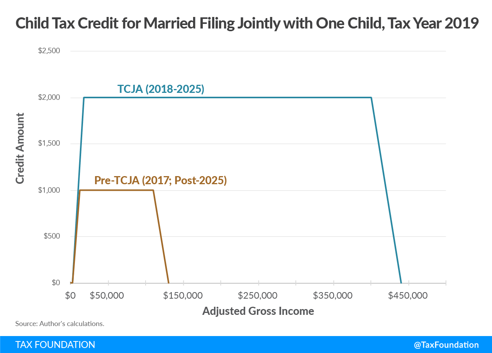
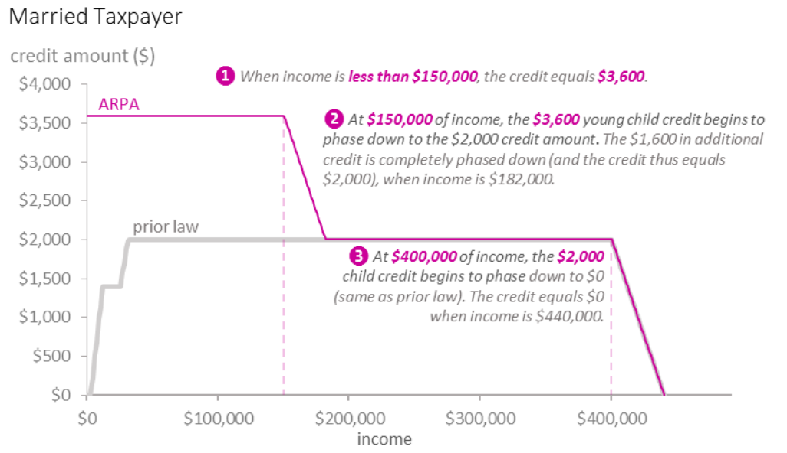

The beginning of a new Child Tax Credit
On Thursday, millions of families started receiving their first monthly Child Tax Credit payments, in the American Rescue Plan’s broadest transfer since its $1,400 relief payments. The poorest children in the country are newly eligible for the full value of the Child Tax Credit, including these monthly payments, and as a result, deep child poverty could fall by as much as half.
It’s an historic time for antipoverty policy, and activists are fighting to make the policy permanent. And yet, the program’s design will result in overpayments, underpayments, exclusion errors, and high marginal tax rates for parents. In this post, I review the changes underway, alternative policy designs to address these issues, and our research on child allowances.
History of the Child Tax Credit
The Clinton administration created the Child Tax Credit (CTC) in 1997, coinciding with broader welfare reform. In his book, The Fiscalization of Social Policy, sociologist Joshua McCabe describes how tax credits became major components of American welfare policy, and argues that they evolved as a “strategic adaptation to austerity.”
The CTC has historically been partially refundable. Tax credit refundability refers to whether tax filers with no net federal tax liability benefit; refundable tax credits are therefore more progressive than non-refundable credits, since lower-income tax filers are less likely to have net tax liability. A portion of the CTC, called the Additional Child Tax Credit, is refundable, though this portion also phases in with income. The full value is only available to those with federal tax liability, reducing that liability toward zero. The credit also phases out with income for higher earners. Tax filers receive the benefit once they do taxes the following year.
Since its creation, the CTC has been expanded multiple times, most recently as part of the 2017 Tax Cuts and Jobs Act. This reform doubled the maximum amount to $2,000 per child, increased the refundable portion, extended the phase-out threshold, and limited the credit for children and dependents without Social Security numbers. The Joint Committee on Taxation estimated that these CTC reforms cost $544 billion from 2018 to 2027, 37% of the bill’s $1.5 trillion net cost over that period.

How the American Rescue Plan changed the Child Tax Credit
For the 2021 tax year only, the American Rescue Plan makes four major changes to the CTC:
- Extends eligibility to 17-year-olds
- Raises the maximum amount from $2,000 per child to $3,600 for children under age 6 and $3,000 for children aged 6 to 17; this higher amount is available to parents with income below $75,000 (single) or $150,000 (married)
- Makes the credit fully refundable
- Prepays half the expected 2021 credit on a monthly basis, beginning in July 2021
The below chart from the Congressional Research Service shows the change for a married taxpayer with one child under age six. Families with low income gain the most, especially those with zero income who previously received $0 and now receive the full benefit.

The Joint Committee on Taxation estimates that this reform costs $110 billion, 6% of the American Rescue Plan’s total $1.9 trillion cost (my research with OpenRG colleagues estimates the cost at $101 billion). The Niskanen Center projects that the reform will lower child poverty by 39%, the bulk of the American Rescue Plan’s total child poverty reduction, which the Columbia Center on Poverty and Social Policy estimates to be 47%.
Evidence we’ve compiled suggests that these child poverty reductions will improve educational outcomes, health, and other forms of child development, helping kids grow into more financially successful and long-lived adults.
However, these poverty estimates assume that the credit reaches all eligible families. Whether this reflects reality is yet to be seen, and one of the primary concerns child poverty experts have had with the bill.
Difficulty reaching poor families
The IRS has successfully reached most tax filers for the Advance CTC, as they did with the three rounds of Economic Impact Payments. However, they lack sufficient records to automatically deliver payments to families that don’t earn enough to have to file taxes (“non-filers”), because they must verify that their income doesn’t disqualify them. In April 2020, the IRS created a tool for non-filers to enter their information and receive CARES Act recovery payments, which they kept up until November. Non-filers who missed that deadline have to file taxes to receive the benefit. Over that time, only about one in three non-filers used the tool to sign up for payments, leaving 9 million eligible families without their payment (some will still end up getting it by filing taxes in the future).
The IRS created a similar tool for non-filers to request the Advance Child Tax Credit, targeting the seven million children (of America’s ten million total poor children) in non-filer households. As Paul Williams has documented, the tool is only designed for computers, which about half of non-filers lack. The site doesn’t have a memorable .gov URL (it’s freefilefillableforms.com/#/fd/childtaxcredit), isn’t quickly linked from official sites (it takes three clicks from childtaxcredit.gov, once you know where to look), requires an email address, and doesn’t preview on social media sites. The 720,000 children whose parents used the Economic Impact Payment non-filer tool will receive the CTC, but according to Matt Bruenig of the People’s Policy Project, the IRS only expects to reach 90 percent of eligible children, indicating that non-filers will largely miss out.
Some tax filers will also use IRS tools to track eligibility, update their family structure (number of children and marital status), income, or bank details, or to opt out. Updating income will not be possible until later in the summer. Since the payment is based on income in 2020, which was lower than income in 2021 overall due to the pandemic, many families will have to reconcile overpayments in 2022 unless they use these tools. Pandemic aside, those with volatile incomes may have to update their information regularly to avoid unexpected tax bills; this is one way in which means-tested programs require people to effectively do their taxes multiple times per year.
Why these issues? Some are unavoidable with means-tested programs: the IRS has to verify income somehow, and that’s harder than simply verifying a person’s existence, especially as many families see incomes rise and fall over time. Some also trace to an agreement the IRS has with the Free Filer Alliance, a consortium of tax preparers, stating that those tax preparers, rather than the IRS, will provide free filing services. The IRS considers non-filer tools for Economic Impact Payments and the Advance CTC as tax filing services, hence the freefilefillableforms.com rather than irs.gov domain. On the same day the Advance CTC started delivering payments, Intuit, which makes TurboTax, announced that it would leave the Free Filer Alliance, as H&R Block did in June 2020. Whether or not this is a sign that the IRS could renegotiate the Free Filer Alliance agreement and provide their own non-filer tool, policymakers can consider designing the program without the need to collect income information.
Advantages of a universal child allowance
While means-testing the CTC expansion lowers poverty more for a given budget (at least on paper, assuming full take-up), universality offers other advantages.
Senator Mitt Romney’s Family Security Act child allowance bill takes a different path than the ARP CTC, by
- Phasing out at higher incomes: $200,000 for singles and $400,000 for married filers
- Delivering to all parents, and then has ineligible parents repay the following year at tax time
- Being administered through the Social Security Administration
The Social Security Administration has over 1,200 field offices across the country, and enrolls every newborn in their system. Running short-term programs through the IRS allows payments to quickly reach those who have filed taxes, but long-term programs may have greater success with a brick-and-mortar footprint (it’s rare to hear concerns that people eligible for Social Security aren’t receiving benefits).
But the Social Security Administration doesn’t have income information. This can be an advantage, as it forces the program eligibility rules to be simple, as the Romney bill’s rules are. But to the extent that payments are means-tested, they’ll have to be repaid at tax time. High-income parents can weather those surprise tax bills, and many have significant reconciliation anyway, but a $6,000 surprise tax bill could significantly disrupt the finances of a single parent with $100,000 income.
Beyond facilitating the Social Security Administration distributing child benefits and avoiding over- and under-payments, making the benefit universal avoids disparate taxation by parental status. Both the ARP CTC and Romney’s bill levy higher marginal tax rates on high-income parents than high-income people without children. In effect, means-testing places the cost of a universal child allowance on high-income parents; making it truly universal costs more, but if funded by progressive taxation, those costs would be more equitably borne by all high-income people.
Parents may work less in the market, but kids will benefit
As I wrote in a paper on Romney’s Family Security Act, child allowances will likely modestly reduce parental formal labor supply. That bill, like ARP’s CTC expansion, removes the benefit’s phase-in, creating a relative increase to low-income parents’ marginal tax rates. Families with income around the phase-out region will also face higher marginal tax rates. People respond to higher marginal tax rates by working less, so we can expect parents with income in the affected regions to spend less time in the formal labor market.
These effects on marginal tax rates outweigh the effects of the assistance itself. The extent to which people work less when they have more income, the income effect, is empirically small: the Congressional Budget Office estimates that each 1% increase to income reduces labor supply by 0.05% (about a sixth the size of labor supply responses to higher marginal tax rates). To the extent that extra income causes parents to work less, they may also spend more time with their children.
This extra parental involvement and purchasing power will benefit kids. Cash assistance differs from restrictive in-kind benefits like nutrition assistance, childcare subsidies, or housing vouchers, which are more costly to administer and more complicated to use. Evidence of the tangible gains to children whose families receive cash assistance indicates that parents use cash wisely; if the money were routinely squandered, giving money to parents wouldn’t help kids. If anything, cash transfers generally reduce consumption of temptation goods, and our analysis of a study in Canada found that parents experiencing homelessness increased spending on kids more than any other category. Restricting low-income parents’ purchases is costly and unnecessary.
Our past and future research
Several of our studies find that child allowances cost-effectively reduce poverty:
- Across US states, a $300 per month child allowance generally cuts child poverty in half and overall poverty by 20-25%.
- Including children in fixed UBI budgets makes policies more progressive (we’ve also found this in the UK), and for smaller budgets, planners can optimize poverty and inequality by giving _more _to children than adults.
- Compared to childcare subsidies, budget-equivalent child allowances reduce poverty and inequality more. Replacing childcare costs has about a third of the poverty impact as spending the money on universal cash, and a transfer equal to the cost of childcare in one’s state to all parents is also less progressive than a uniform national child allowance, because richer parents live in areas where childcare is more expensive.
- Our budget-neutral UBI calculator shows that a variety of child allowance policies reduce child poverty, even when replacing benefit programs.
We’re continuing to invest in child allowance research; for example, in the near future we’ll publish interactive maps of child allowance poverty impacts by local area, such as state legislative districts.
Conclusion
Before Thursday, 28% of Americans lived in households receiving a monthly check from the federal government. The new CTC more than doubled that share to 65%. Alongside the $1,400 recovery payments, it makes the American Rescue Plan perhaps the largest step toward universal basic income the US has taken in decades. But policymakers shouldn’t rest on their laurels: fixing technical issues will enhance the antipoverty impact, and designing a robust post-2021 policy will make the changes durable.
Subscribe to the UBI Center
Get the latest posts delivered right to your inbox